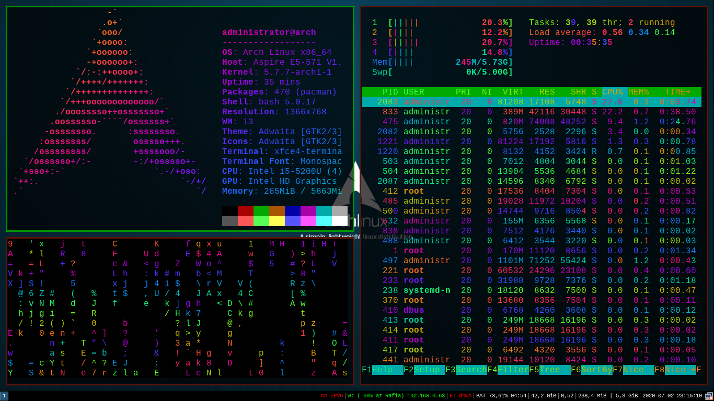
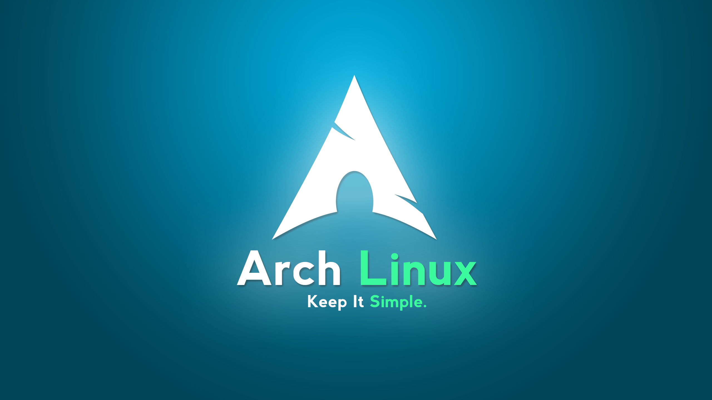
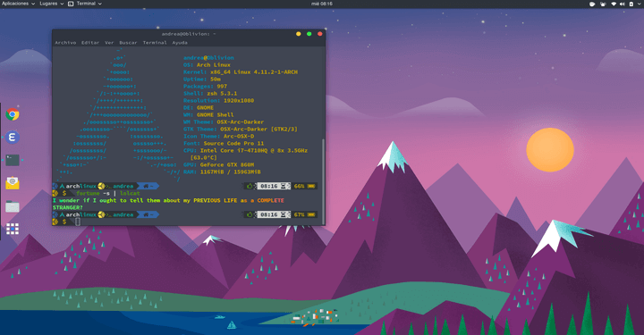

O Arch é uma distribuição Linux de origem canadense e que caiu no gosto de milhares de pessoas ao redor do mundo,
hoje vamos entender como foi o nascimento de um dos sistemas que mais conseguiram levar o conceito KISS ("Mantenha isso simples, idiota!") para o público.

O Arch Linux foi desenvolvido originalmente pelo canadense Judd Vinet.
Seu desenvolvimento sempre foi aplicado ao minimalismo e simplicidade de código, esperando sempre que o usuário seja a parte determinante para trazer a coesão que o mesmo espera para o sistema.b
Um dos grandes destaques do Arch, como é chamado, é sem dúvida o gestor de pacotes Pacman (Package Manager), que foi escrito especialmente para o sistema e é utilizado até hoje para instalar, remover, pesquisar e fazer o upgrade de pacotes do sistema, ou seja, fazer a gestão de software.
O Arch Linu x utiliza o chamado modelo Rolling Release de lançamento, isso significa que não existem “versões” do Arch como temos no Ubuntu ou no Debian. O usuário instala o sistema apenas uma vez e vai apenas atualizando, ou pelo menos, esta é a premissa.
Ouptro grande destaque é o repositório AUR (Arch User Repository), que como o significado da sigla indica, é o repositório da comunidade de usuários/desenvolvedores do Arch Linux, onde você encontrará pacotes para praticamente qualquer programa disponível para Linux.

Baixando Arch Linux:
Fazendo o download do Arch Linux
Você encontra a ISOs para download do Arch Linux aqui.
Depois é só usar um programa como o Etcher para criar um pen drive bootável da distro, como você faria com qualquer outra.
Caso tenha alguma dúvida, a um vídeo apresentando do zero a instalação Clique Aqui para assistir
Área de trabalho Arch:
